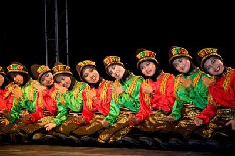
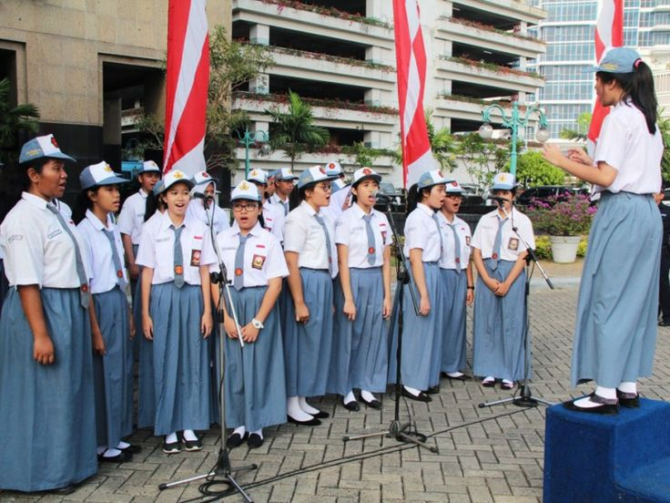
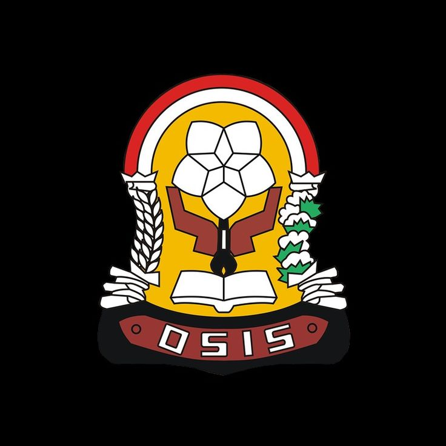
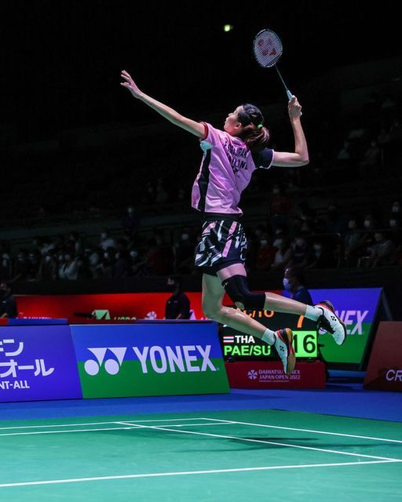
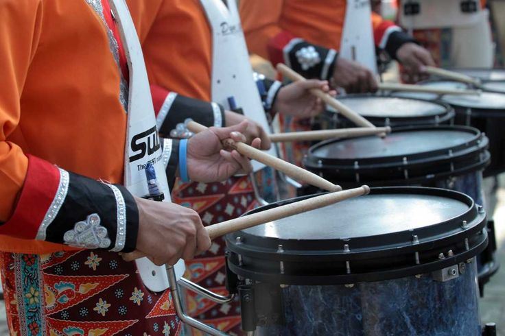
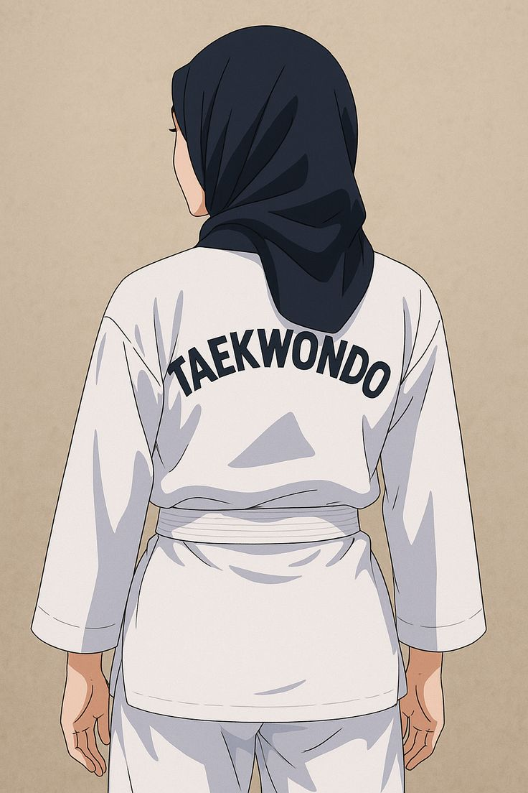

Kegiatan Ekstrakurikuler
SMA Pratama Elit Nusantara menyediakan berbagai kegiatan ekstrakurikuler yang bertujuan untuk mengembangkan bakat, minat, kreativitas, sportivitas, serta kemampuan organisasi siswa. Melalui kegiatan ini, siswa dapat belajar bekerja sama, meningkatkan rasa percaya diri, dan meraih berbagai prestasi.

⚽ Futsal
Mengembangkan kemampuan olahraga, kerja sama tim, dan sportivitas siswa.

🎨 Seni Tari
Melatih kreativitas, rasa percaya diri, dan kecintaan terhadap budaya Indonesia.

🎤 Paduan Suara
Mengembangkan kemampuan vokal, kekompakan, dan musikalitas siswa.
💻 IT Club
Belajar pemrograman, desain, dan teknologi digital modern.

📢 OSIS
Membentuk jiwa kepemimpinan, tanggung jawab, dan organisasi siswa.

🏸 Badminton
Melatih ketangkasan, kebugaran fisik, dan prestasi olahraga.

🥁 Drumband
Mengembangkan disiplin, kekompakan, dan kemampuan musik siswa.

🥋 Taekwondo
Melatih bela diri, kedisiplinan, dan mental percaya diri siswa.